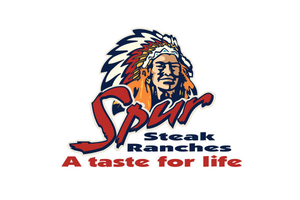
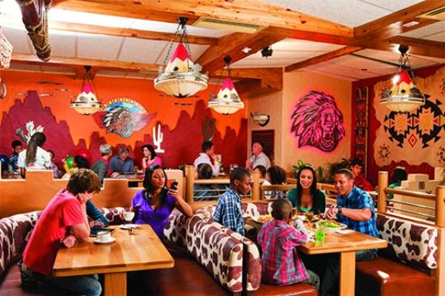
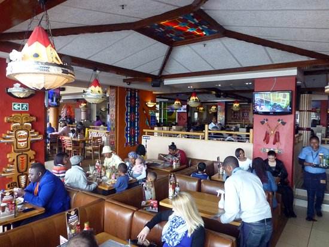
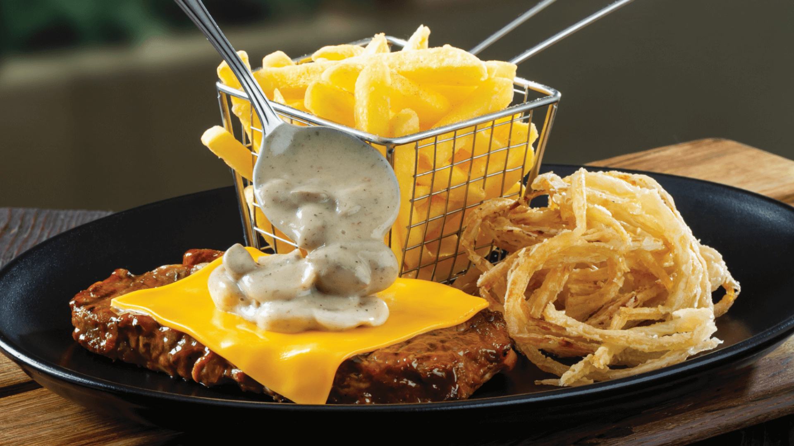

Spur
Nothing brings people and families together like sharing a great meal in a warm and friendly environment. Generous portions, great service, and a friendly vibe where everyone is welcome; that is what Spur’s about and that’s what has made it South Africa’s favourite family restaurant. Since 1967 when the first Spur opened in Cape Town, Spur Steak Ranches have been part of the South African family. In the years since then, Spur has helped to create countless special memories and earned a reputation for tasty, nutritious, value-for-money meals.


